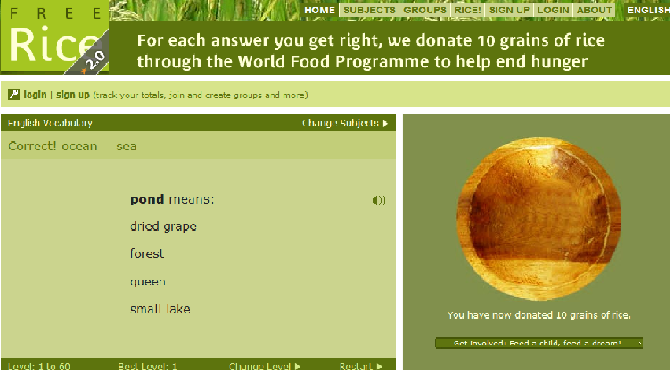
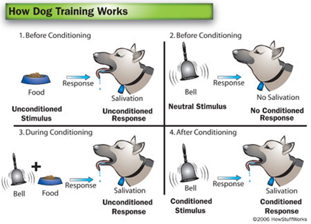

Establishing a reinforcement process within your learning system can be tricky. This is because reinforcement is user defined. Currently, you can find many Learning Systems that may, for example, reward users with encouraging remarks (in text) following a question answered correctly. However, students may find this patronizing or unnecessary. Thus, it is important to consider your target user group when establishing a reinforcement system. You should obviously take a much different approach to designing a system to positively reinforce children than if you were designing a system to positively reinforce adults.
Free rice is a good example for an innovative reward/punishment design. By successfully answering the questions rewards you with 10 grains of rice and progressively, extra title showing how many consecutive answers the consumer has gotten right. The punishment of answering wrong is to lose your consecutive streak. This was really one of the few things freerice was doing well with. As this site was our last project, there is confirmation that this part of the design was designed well for the users.
Classical conditioning, which has been notoriously exemplified by Pavlov’s dog, is the theory responsible for all reflexive learning. However, you may choose to use no reinforcement system at all. Whatever you choose to do, I warn you to tread carefully around matters of reinforcement and design specifically to meet the needs of your target user group
